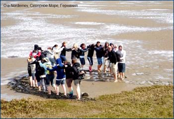
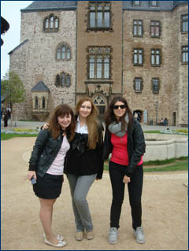

|
Прошлый семестр в качестве студентки по обмену я провела в Германии в Hochschule Harz, которая расположена в маленьком, но безумно красивом городке Wernigerode. И этот семестр с полной уверенностью можно назвать одним из самых ярких моментов (а возможно и самым ярким) за все мои студенческие годы. Что же сделало его настолько незабываемым? Это и атмосфера города, в которой можно было с головой окунуться в немецкую реальность и познакомиться с немецкими традициями и менталитетом, и путешествия по стране, и обучение в Hochschule. Но, конечно же, нельзя забывать и студенческую жизнь, которая шла полным ходом, несмотря на размер Wernigerode (а это всего 30 000 человек). Активное участие международного офиса HS Harz в ее организации приятно удивило. Уже на ориентационной неделе нас знакомили не только с университетом, но и с жизнью города в полном смысле этого слова. Кроме экскурсий по Wernigerode и окрестностям, которые, кстати, очень даже живописные, всех студентов по обмену приглашали на барбекю, в местные пабы и бары. Это помогло не только попробовать немецкое пиво :), но и быстрее привыкнуть к городу, познакомиться с немецкими студентами и другими студентами по обмену. Семестр в Германии предоставил и эту уникальную возможность – пообщаться и пожить «бок о бок» со студентами практически из всех уголков мира. Можно было на личном опыте убедиться в том, насколько сильно от наших отличаются взгляды и традиции различных национальностей. Иногда бывало немного сложно понять друг друга и ужиться под одной крышей, но зато насколько интересно и познавательно! :)
Так и прошел семестр… такой запомнилась Германия… интернациональное общение и вечеринки, наш милый городок, уютный университет, величие архитектуры, немецкая точность и аккуратность… уже скучаю…
Бубнова Анастасия, 5 курс, 1 группа
Студентам, обучающимся на факультете международных отношений, предоставляется множество возможностей участвовать в программах международного обмена.
Для всех тех, кто хочет обменять суету и стрессы большого города на очарование старого доброго бюргерского городка, где каждый дом повидал на своем веку больше, чем все мы с вами вместе взятые, а, идя по маленьким улочкам можно увидеть немало впечатляющего – Вернигероде отличный выбор. Hochschule Harz –замечательный университет, который, несмотря на пока не многолетнюю историю, радушно встречает студентов с различных уголков мира.
Наверняка многие студенты в раздумьях об учебе в незнакомой стране со страхом думают о возможности остаться в одиночестве. Признаться, и мы немного побаивались того, как нас встретят студенты других национальностей, сможем ли мы легко влиться в коллектив. Но все наши опасения оказались напрасны. Все студенты, приехавшие по обмену по программе «Erasmus» оказались очень приветливыми, дружелюбными и общительными и совсем скоро стали нашими хорошими друзьями. Сотрудники международного отдела HS-Harz также отнеслись к нам со всем пониманием. Не могу сказать, что у нас совсем не было никаких трудностей и проблем. Но рядом было большое количество людей, готовых в любую минуту прийти на помощь.
Обучение в HS-Harz – это отличная возможность получить знания не только в экономической сфере, но также улучшить свои языковые навыки, общаясь на разных языках с другими студентами и выступая перед большой аудиторией. И, конечно же, это огромный шанс познакомиться с другой культурой, обзавестись новыми хорошими друзьями, получить массу незабываемых впечатлений и огромный опыт на всю жизнь.
Мне часто вспоминаются слова: «Никто не говорил, что будет легко». Не думайте, что обучение в HS-Harz – это очень легко и просто, но знайте, что это вполне осуществимо и очень увлекательно. Все зависит от Вас! Удачи!
Глазунова Татьяна, 5 курс, 4 группа
Германия – страна, которую обязательно стоит посетить как ценителям немецкого языка (пожалуй, в первую очередь), так и всем тем, кто интересуется Европой.
Ни для кого не секрет, что как и в прошлом, так и по сей день Германия является центром культурной, экономической и политической жизни континента. Пройдя долгий исторический путь, немецкие города поражают своей многогранностью и противоречивостью, в тоже время отражая характерный национальный уклад жизни и отвечая всем современных тенденциям. Хотя никакие описания и отзывы не могут превзойти личного опыта. И нам, к счастью, представилась возможность своими глазами увидеть и оценить то, о чём мы так много слышали и читали.
Семестр, проведенный в Германии, нельзя назвать семестром, проведенным лишь в Вернигероде, городке, в котором мы учились. Я ничуть не хочу умалить достоинства этого замечательного маленького местечка, от которого мы остались в восторге. Но нельзя не упомянуть о тех путешествиях, что мы проделали.
В общей сложности мы посетили около 15 немецких городов, что очень и очень немало! Среди них были небольшие города, такие как Магдебург (где находится удивительная зеленая цитадель австрийского архитектора Хундертвассера), Халле (самый крупный город земли Саксония- Ангальт, в которую собственно и входит наш Вернигероде), Веймар (родина Шиллера и Гёте) и другие. А также крупные города, которые явились жемчужинами всего нашего пребывания! Чего стоит один только Дрезден со своей галереей старых мастеров, где можно полюбоваться подлинными творениями Рафаэля! Гамбург, Ганновер, Бремен – это названия говорят сами за себя!
Помимо того, со стороны немецкого университета поступило предложение об организованной групповой поездке к Северному морю. Это был своеобразный проект, в котором приняло участие более 30 человек из разных стран Европы, с которыми мы учились на протяжении всего семестра. Дорога была достаточно долгой, но зато каков был результат! Абсолютно другая грань Германии! 3 дня мы провели на острове в холодном, но безумно красивом Северном море.
В довершение нашего пребывания мы отправились в Берлин. Столица, самый крупный город, пропитанный историей и почему-то очень близкий, хотя и незнакомый никому из нас ранее. Город ярких контрастов, где всё напоминает о прежней разделённой Германии, но в тоже время символизирует нынешнее единство нации. Центры высочайших технологий на ряду с постройками, чей возраст насчитывает несколько веков. Огромный остров музеев, а для особых ценителей есть даже музей мадам Тюссо. Такой он, величественный Берлин.
Таким образом, мы провели семестр, успев не только набраться бесценного заграничного и жизненного опыта, а также открыли для себя частичку (а может быть даже и целую часть!) Германии.
Савченко Дарья, 4 курс, 4 группа
Прошло уже много времени с того момента, как я впервые ступила на волшебные, мощеные улицы Вернигероде. Это была даже не симпатия - это была любовь с первого взгляда. Поезд вез меня из Берлина, и взгляду открывались то дивные идиллические холмы, похожие на спины неведомых животных, то живописные изумрудные поля, луга и города с потрясающей архитектурой. Наверное, именно в таких местах понимаешь и наиболее остро чувствуешь красоту жизни. Стоило один раз вдохнуть свежий воздух, запах приближающейся весны, чтобы мечтать вернуться сюда. Панорамы долин и городов разбивали вдребезги былые представления о рае. Куда там тропикам! Чистые, ясные цвета этих мест были куда привлекательнее.
Еще достаточно времени впереди, но я уже скучаю. По этим улицам, гуляя по которым ты теряешь ощущение времени. По улыбкам прохожих, по спокойствию и гармонии, которыми пропитан этот город. По замку, который словно присматривает за тобой с высоты своего положения и возраста. Даже по регулярно проносящемуся мимо окон аудиторий, испускающего клубы дыма, поезду! И, конечно же, по университету, дружной группе Эразмусов, по захватывающим лекциям и семинарам, по веселым встречам, танцам и сотням прочих мелких вещей, ценность которых я осознаю, только уехав отсюда.
Я уже начала морально готовиться к отъезду. Знаю, что буду уезжать к непреодолимым желанием вернуться, телефонами и адресами друзей, кучей новых, и что более важно – нужных и полезных знаний, гигабайтами фотографий, сотнями историй и бесконечными впечатлениями. И, конечно, с любовью в сердце. Любовью к этому чудесному городу и этим волшебным 4 месяцам.
И уезжая, глядя в окно на удаляющийся город, я пошепчу "Спасибо…мы еще встретимся".
Худобина Наталья, 5 курс, 4 группа
С 13 по 30 июля я принимал участие в Международной Летней
Школе (FH Harz, Вернигероде, ФРГ). Занятия включали в себя языковые
курсы, проходившие ежедневно, и лекции на тему «Возобновляемые источники
энергии».
г. Дрезден г. Берлин
В течение трёх недель состоялось несколько экскурсий на предприятия
и промышленные объекты, с целью ознакомления с темой, которой был
посвящена данная летняя школа. Перед началом языковых курсов был
проведен тест для определения уровня владения языком. По результатам
тестирования всех участников разбили на три группы: начинающие изучать
немецкий язык, те, у кого уже есть определённые знания и, если уместно
такое название, продвинутая группа (или те, кто показал высокие
результаты во время тестирования).
г. Вернигероде
Занятия проходили каждый день в первой половине дня. Во время лекций
и экскурсий давалась в основном общая или статистическая информация.
Основная часть работы проводилась самостоятельно. Смысл самостоятельной
работы заключался в более детальном исследовании группой определённых
аспектов общей темы и последующем представлении результатов работы.
Было сформировано несколько рабочих групп, которые занимались подготовкой
совместного сообщения по своей теме. Параллельно проходила подготовка
определённых языковых проектов. Каждая группа немецкого языка готовила
небольшое представление, призванное показать уровень, которого она
достигла за время занятий.
г. Вернигероде
В последний день состоялось вручение сертификатов о прохождении
обучения в рамках 11 Международной летней школы.
Орехов Денис, студент ФМО
Вернигероде, Германия, Зимний семестр 2011/2012
Семестр, проведенный в Вернигероде, для меня был не первым. Весной–летом 2010 года я уже имела счастливую возможность обучаться в Hs Harz по специальности International Business Studies. Зимой 2011 года я провела еще один незабываемый семестр в самом центре Германии, в уютном маленьком городе, обучаясь в прекрасно оборудованном университете. Весь учебный процесс достаточно модернизирован и информацию относительно всех предметов, преподавателей, учебных аудиторий, а также справочную информацию можно найти на сайте ВУЗа, войдя под личным назначенным каждому студенту паролем.

Возле замка Вернигероде
В начале каждого семестра проводится ориентационная неделя, в течение которой студенты получают всю основную информацию по организации учебного процесса в целом, а также студенты-волонтеры помогают с формальностями, заполнением необходимых документов, показывают город и окрестности. В течение этой же недели проходит распределение по группам для изучения немецкого языка.
Для тех студентов, которые действительно увлечены немецким и занимаются его изучением давно, рекомендую принимать участие в самых различных группах, по максимуму. Формирование групп производится не только по уровням. Так, например, есть группа экономического немецкого, немецкого в туризме, изучения немецкой культуры на языке, курс грамматики, и даже подготовка к Test Daf. Всё зависит от числа желающих изучать тот или иной аспект. В случае если набирается должное число желающих, формируется группа. Таким образом, Вернигероде является прекрасным местом для изучения и применения на практике немецкого языка.
Что примечательно, в рамках предмета немецкой культуры, например, были организованы даже внеклассные мероприятия. Так наш преподаватель немецкого языка организовал для нас встречу с представителями старшего поколения, которые рассказали из первых уст о многих интересных страницах немецкой истории. Также не раз мы принимали участие в экскурсиях, которые помогали всё ближе понять и ощутить немецкий менталитет.
Восхождение на гору Брокен

Берлин
Берлин: памятник Холокосу и Берлинская стена
Обучаясь по программе двойного диплома, я изучала немало предметов по своей специальности, преимущественно на английском языке, при этом часть экзаменов проводились в форме презентаций, часть в форме письменных работ или письменного экзамена.
В целом обучение в Hs Harz является, на мой взгляд, уникальной возможностью совмещения прекрасной учебы, практики языка, изучения культуры страны, а также знакомства с людьми, как из различных европейских стран, так и с местными жителями.
Университет дает множество шансов активным студентам, которые привыкли и хотят усовершенствовать и даже продемонстрировать на различных университетских мероприятиях свои спортивные, художественные, вокальные и иные достижения. Всё вышеперечисленное формируется в один короткий, но такой яркий, запоминающийся, красочный полезный семестр, который остается навсегда в памяти.
Дарья Савченко, 5 курс
Я провела зимний семестр 2011–2012 в Институте экономики и техники Гарц в городе Вернигероде, Германия.
В течение семестра я подробно изучила структуру, особенности функционирования и отличительные черты немецкого туристического рынка в рамках курсов International Tourism (проф. Лангвогдт), The German Tourism Market (проф. Зейсс), International Expansion of Businesses in Tourism (проф. Шолле), узнала нормы этикета, традиции, обычаи и закономерности в развитии многих стран мира (в особенности европейских), а также приняла активное участие в сборе и анализе сведений, посвященных быту и культуре Германии в ходе курса Intercultural Competences (проф. Фишбах), приобрела навыки, необходимые для успешного проведения научных и бизнес-презентаций в рамках дисциплины Study Skills (проф. Мюллер), продолжила изучение испанского языка под руководством проф. Каули и успешно начала изучение немецкого языка в качестве третьего иностранного под руководством проф. Бернардт. Хочется отметить, что преподаватели этого института смогли в интересной и в то же время информационно-насыщенной форме донести суть своих предметов, предоставляя в то же время нам, студентам, возможность проявить свои способности и накопленные знания посредством сдачи различного рода презентаций и письменных работ.
Кроме того, проживая в Германии, я смогла расширить свой кругозор, узнавая особенности быта граждан этой страны и ознакамливаясь с немецкой научной и художественной литературой.
Несомненно важным и интересным стал для меня также опыт общения со сверстниками из других европейских стран. Проживая со студентами из Франции, Испании, Словакии, Эстонии, Венгрии, я узнала много нового о традициях, существующих в этих странах, а также имела шанс обсудить с ними политическую обстановку в их странах, узнавая при этом не только "сухие" факты, но и то, как молодёжь относится к демографическим, экономическим, социальным и политическим проблемам, существующим в их странах.
По моему мнению, включенное образование в европейском институте даёт прекрасные возможности для накопления полезного опыта как в учебном, так и во внеучебном процессах. На мой взгляд, приобретенные знания и навыки помогут мне в будущем в успешном трудоустройстве в сфере международных отношений.
Полина Брыкина, 4 курс
Осенний семестр 2011 года я провела за границей в небольшом городе Вернигероде. Многие называю его раем земным в центре Европы и сердцем Германии и не зря, ведь на самом деле, этот городок пропитан необычайной атмосферой, прочувствовать которую нам удалось уже на первой ориентационной неделе! Хотелось бы отметить хорошо продуманную работу International office, который организовал экскурсии и различные программы для нас, студентов по обмену, направленные на то, чтобы мы познакомились со всеми прекрасными сторонами этого города, его достопримечательностями и окрестностями.
International office организовывал мероприятия, такие как International Abend, на которых всем предоставлялась возможность попробовать традиционные блюда других государств, рассказать о собственной стране и приготовить национальные кухню! Ориентационная неделя позволила мне не только поближе познакомиться с тем местом, в котором мне предстояло провести эти 5 месяцев, но и так же поближе узнать друг друга, других студентов из абсолютно разных стран мира, а это безумно интересно!
Для меня учеба на иностранном языке была крайне увлекательна. Профилем моего обучения в Вернигероде были экономика и туризм. Хоть это и не те предметы, которые я изучаю в нашем университете, но мне было интересно проводить исследования и опросы по темам, касающимся этих научных дисциплин. Я извлекла из этих дисциплин много полезных знаний и уверенна, что они пригодятся мне в будущем, например, я ознакомилась с особенностями туристического рынка Германии, влиянием мировой экономики на туризм, а так же различными системами он лайн бронирования. Так же благодаря некоторым предметам я более тесно познакомилась с национальными особенностями характера и поведения немцев, их типичными предпочтениями в различных жизненных сферах. Hochschule harz предоставила все условия для изучения немецкого языка как для начинающих, так и для продолжающих и не только немецкого, а так же испанского, английского и других языков. Распространенным явлением так же были языковые тандемы, когда люди, изучающие родные языки друг друга отвечали на вопросы, практиковали свои знания непосредственно с носителями языка.
Хотелось бы отметить, что система обучения в Hochschule harz несколько отличается от той, которая существует у нас в университете. Зачет, по окончанию многих курсов ставится в зависимости от того, насколько хорошо ты выполнил финальную презентацию и, безусловно, со временем ты приобретаешь новые полезные навыки, правильно раскрывать тему презентации, на что обратить особое внимание при ее оформлении и, конечно же, как успешно презентовать.
В конце я могу добавить, что этот семестр за границей, в маленьком, но очень волшебном городе Вернигероде стал чудом не только для меня, но и для моих новых друзей! Интересно, что за это время многие успели исполнить свою мечту: углубить знания иностранных языков, познакомиться с людьми из различных частей мира, попутешествовать, найти вторую половинку, а мне Вернигероде помог понять, что мне нужно от жизни на данный период времени и к чему стремиться.
Ксения Калитка, 4 курс
Зимний семестр 2012–2013 года я провела в Германии в маленьком городке Вернигероде и обучалась в качестве студента по обмену в Hochschule Harz. Это уже вторая моя поездка именно в этот город и именно в этот университет!
Зимний семестр 2012–2013 гг.
Обучение в университете строится абсолютно другим способом. Именно это и привлекло меня в Hochschule Harz. Я решила, что в первую поездку я не успела узнать всего того, что хотелось бы. Университет предоставляет право выбора дисциплин студентам, что дает уникальную возможность подобрать лекции и семинары, которые интересны именно тебе! Во второй раз я выбирала дисциплины уже другого плана, так как мои интересы и цели в области образования немного изменились. Профессоры данного университета высококвалифицированны и обладают не только теоретическими, но и практическими знаниями, что немаловажно! Университет хорошо оборудован, аудитории оснащены современной техникой, электронными досками и проекторами. Это позволяет учебный процесс сделать более увлекательным и интересным.
Ориентационная неделя со студентами
из Латвии, Китая, Испании, Франции, Германии и России

Ориентационная неделя.
Поездка в соседний город Хальберштадт
Конечно хочется поделиться своим опытом общения с иностранными студентами! Так как я уже не первый раз ездила в качестве студента по обмену в Европу, то была готова к встрече с новыми людьми, и мой опыт помог легко завести знакомства, общаться на протяжении всего семестра и сохранить теплые отношения со студентами из разных стран. Целый семестр я провела со студентами не только из Европы (Испания, Франция, Латвия, Чехия, Польша), но и из США и Китая. Общение с людьми из разных стран это уникальный опыт, благодаря которому ты учишься понимать и принимать культуры других стран и народов. Трудностей в общении практически не было, хотя менталитет и восприятие окружающего мира безусловно разное. Было очень интересно обсуждать культурные, экономические и политические события, происходящие в той или иной стране! Ты имеешь возможность узнать как к этому относятся граждане именно этой страны, спросить и постараться понять почему и зачем это происходит.
Более того, благодаря этой поездке я еще раз насладилась атмосферой этого маленького и неповторимого городка! Уютные и тихие улочки, красивые дома в стиле fachwerk, необычайно красивая природа. Удобное расположение не только относительно других немецких городов, но и соседних стран! Для меня это место навсегда останется символом моих студенческих лет.
Празднование «Октоберфэста–2012»
Ганновер
И в конце хочу сказать, что если вы еще не определились и не уверены стоит ли ехать обучаться в международный ВУЗ-партнер, то я могу сказать, что бояться не надо! Что этот замечательный шанс упускать ни в коем случае нельзя! Это уникальная возможность, которая предоставляется нашим университетом и её надо использовать!
Бражникова Анастасия, студентка ФМО
Учеба по обмену – один из самых лучших периодов в моей жизни! Каждый день за границей был особенным, насыщенным новыми эмоциями, событиями, людьми. Совсем не пожалела о своем выборе – Германия. Для меня теперь это идеал страны, в которой можно и нужно жить всю свою жизнь. Все создано для комфорта и удобства людей. Окружающие – очень приятные и милые люди, всегда готовые помочь и подсказать в любой ситуации.
Наш маленький городок Вернигероде оказался сказкой, превратившейся в реальность. Великолепные узкие вымощенные улочки с необыкновенными домами, как в игрушечном домике. Каждый день мы не переставали удивляться красоте и очарованию этого города. Изначально он был назван в честь крепости, которая находится в самой высокой точке города. Конечно же, не обошлось без ее посещения. Мы погрузились в атмосферу средневекового времени, а, наслаждаясь видом из башни, мы не могли перевести дух, казалось, вся Германия как на ладони.
Несмотря на небольшие размеры городка, там существует четко слаженная инфраструктура. Все транспортные средства ходят четко по расписанию, все магазины и развлекательные заведения работают строго по часам, а воскресение является выходным днем для всех, даже для целой Германии, ни один магазин в этот день не работает.
Вообще немцы такие люди – всегда улыбчивые, приветливые, чувствуешь себя как дома или каким-то очень родным человеком. Это ощущение я считаю самой большой ценностью, которую я могла обрести для себя за границей. Терпимость к людям, доброжелательность – теперь считаю эти качества своими жизненными кредо.
Учеба представляла собой безумно интересные интерактивные занятия. Студент находится наравне с преподавателем и может предложить для обсуждения любую интересующую его тему, а преподаватель, в свою очередь, с радостью ее примет и начинается целая дискуссия с интереснейшими разъяснениями преподавателя. Студенту дается полная свобода действий, предложений, проектов, мы сами вправе выбирать себе предметы, темы для презентаций, докладов, иногда даже преподаватели советовались с нами по поводу темы для следующего занятия.
Очень интересным фактом являлось то, что оценки в Германии представляют собой более точную систему оценивания. Это не только один четкий балл, а также десятая часть. Например, наивысшей оценкой являлся 1.0, немного ниже 1.3 и еще ниже 1.7 – то есть в любом случае это высшая оценка, но с учетом более точного оценивания работы. Я считаю такой подход создает наиболее точное впечатление о знаниях ученика.
Также меня поразило то, что немцы относятся с особым трепетом к окружающей среде. На улице в любой точке Германии можно наблюдать чистоту и порядок, ни одной бумажки или другого рода мусора. И, смотря на такое поведение, хочется поступать также и соблюдать чистоту. Кроме того, немцы, как уже известно, необыкновенно педантичны и даже сортируют мусор – это пластик, бумага, картон, бутылки, в общем, выкинуть мусор – это целый ритуал. Кстати, говоря о бутылках, немцы никогда не выкинут ту, на которой есть специальный значок для возможности переработки, такие бутылки они сдают обратно в магазин и получают за это неплохие деньги. Зачем же пропадать добру?
Нельзя не вспомнить о международных студентах, которые раскрасили наши будни. Все ребята были для меня уникальными, все из абсолютно разных стран, а, соответственно, с разными обычаями и традициями, поведением и манерой общения. У нас была необычайно дружная компания, мы постоянно проводили время вместе, делились опытом и впечатлениями, до этого не могла представить, насколько разные люди живут в мире, с абсолютно полярными взглядами на жизнь.
Конечно же, побывав в Европе, не могла проехать мимо других весьма значимых стран: Франция, Италия, Чехия. Эти путешествия запомнятся мне на всю жизнь, и, кажется, лучше ничего и быть не может. Каждая страна уникальна, неповторима и содержит свой собственный шарм и колорит. Этот опыт расширил горизонты моего сознания, изменил меня и перевернул мою жизнь и мировоззрение с ног на голову.
Виктория Погонина, студентка ФМО
|